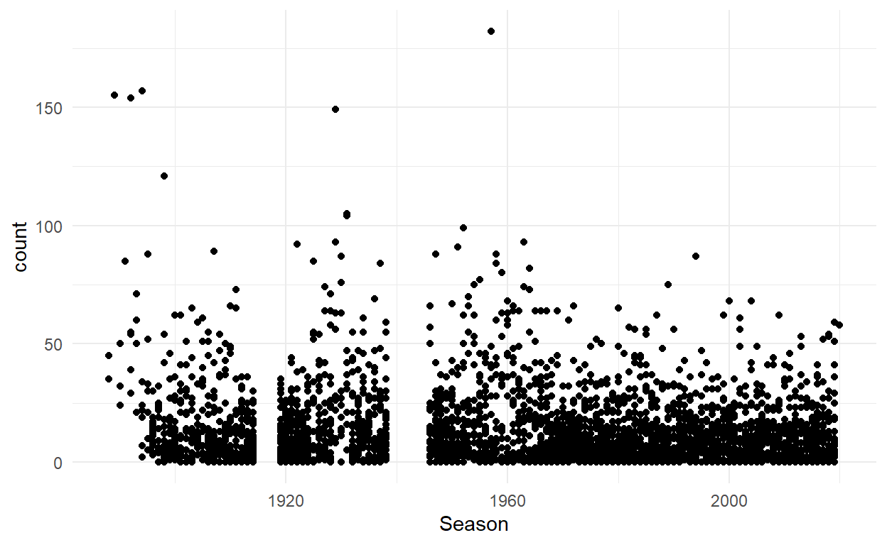

My most popular R package is engsoccerdata. It started as a project to collect soccer results for the top four English leagues, but has morphed into a ridiculously large project. We currently have historical soccer league results from England, Scotland, Germany, Holland, Italy, Spain, France, Turkey, USA, Portugal, Belgium, Greece, & South Africa, as well as cup and other competition data. I’m always looking for people who are interested in helping maintain the package. Many thanks to everyone who has helped over the last 6 years - particularly Robert Hickman and Joe Gallagher who have put in lots of work on it.
In this post, I just want to focus on the recent trend of high scoring in the EPL that has happened during the post-Covid 2020/21 season.
The data
If you don’t have the package, you’ll need to install it. The dataset we want to look at is england.
library(devtools)
install_github("jalapic/engsoccerdata")
library(engsoccerdata)
head(england)
Date Season home visitor FT
1 1888-09-08 1888 Bolton Wanderers Derby County 3-6
2 1888-09-08 1888 Everton Accrington F.C. 2-1
3 1888-09-08 1888 Preston North End Burnley 5-2
4 1888-09-08 1888 Stoke City West Bromwich Albion 0-2
5 1888-09-08 1888 Wolverhampton Wanderers Aston Villa 1-1
6 1888-09-15 1888 Aston Villa Stoke City 5-1
hgoal vgoal division tier totgoal goaldif result
1 3 6 1 1 9 -3 A
2 2 1 1 1 3 1 H
3 5 2 1 1 7 3 H
4 0 2 1 1 2 -2 A
5 1 1 1 1 2 0 D
6 5 1 1 1 6 4 H
tail(england)
Date Season home visitor FT
200623 2020-03-07 2019 Plymouth Argyle Macclesfield 3-0
200624 2020-03-07 2019 Salford City Bradford City 2-0
200625 2020-03-07 2019 Scunthorpe United Grimsby Town 0-2
200626 2020-03-07 2019 Swindon Town Forest Green Rovers 0-2
200627 2020-03-07 2019 Walsall Exeter City 3-1
200628 2020-03-10 2019 Carlisle United Newport County 2-0
hgoal vgoal division tier totgoal goaldif result
200623 3 0 4 4 3 3 H
200624 2 0 4 4 2 2 H
200625 0 2 4 4 2 -2 A
200626 0 2 4 4 2 -2 A
200627 3 1 4 4 4 2 H
200628 2 0 4 4 2 2 HThe dataset has every soccer result in the top 4 tiers of English football from the 1880/81 season to the 2019/2020 season. What it doesn’t contain are data from the 2020/21 season that is ongoing. However, there is a function to collect that:
england20 <- england_current()
tail(england20)
Date Season home visitor FT hgoal
241 2020-10-17 2020 Mansfield Town Bradford City 1-3 1
242 2020-10-17 2020 Newport County Tranmere Rovers 1-0 1
243 2020-10-17 2020 Port Vale Salford City 1-0 1
244 2020-10-17 2020 Scunthorpe United Cambridge United 0-5 0
245 2020-10-17 2020 Southend United Cheltenham 0-2 0
246 2020-10-17 2020 Walsall Exeter City 0-0 0
vgoal division tier totgoal goaldif result
241 3 4 4 4 -2 A
242 0 4 4 1 1 H
243 0 4 4 1 1 H
244 5 4 4 5 -5 A
245 2 4 4 2 -2 A
246 0 4 4 0 0 DWe can bind these two together:
df <- rbind(england, england20)The totgoal column gives us the total number of goals in each game. We can do some tidyverse to look at the average number of goals per game season by season:
library(tidyverse)
df %>%
group_by(Season,tier) %>%
summarise(gpg = mean(totgoal)) -> df.sum
ggplot(df.sum, aes(x=Season, y=gpg, color=factor(tier))) +
geom_line() +
scale_color_manual(values=c("red", "blue", "darkorange","black"), name = "Tier") +
theme_minimal() +
ylab("Average Goals Per Game") +
xlab("Season") +
ggtitle("Changes in Goals per Game Across Time")
The historical decline in scoring over time are well documented. My good friend Ollie Roeder and I have discussed it in some other pieces, e.g. here for Contexts and here for 538. Since tactical changes that came about in the mid 1960s, scoring has been relatively stable across all four tiers of English soccer.
What’s happening this season is quite striking. People have obviously noticed that the top tier - the EPL - has had a much higher increase in goals per game. Below are the goal per game over the last 8 years in the top tier:
df.sum %>% filter(Season>2012, tier==1)
# A tibble: 8 x 3
# Groups: Season [8]
Season tier gpg
<dbl> <dbl> <dbl>
1 2013 1 2.77
2 2014 1 2.57
3 2015 1 2.7
4 2016 1 2.8
5 2017 1 2.68
6 2018 1 2.82
7 2019 1 2.75
8 2020 1 3.72You can see that scoring has shot up by more than a goal per game in the current season.
Tiers 3 and 4 appear to be going along at the same rate. What’s happening with the Championship (tier 2) though ? They’ve gone in the opposite direction. Here are the average goals per game in the last 8 seasons in the second tier:
df.sum %>% filter(Season>2012, tier==2)
# A tibble: 8 x 3
# Groups: Season [8]
Season tier gpg
<dbl> <dbl> <dbl>
1 2013 2 2.60
2 2014 2 2.67
3 2015 2 2.42
4 2016 2 2.61
5 2017 2 2.55
6 2018 2 2.67
7 2019 2 2.63
8 2020 2 2
Scoring has dropped by about 0.6 goals per game! Obviously, it’s still relatively early in the season. At the time of writing, only 59 games have been played in the Championship - so small sample sizes etc. But, given all the arguments for the increased rate of scoring in the EPL revolve around crowds being removed - we do not see that pattern in the Championship. I could look at similar patterns in other European leagues using my package, but will leave that for later in the season.
Games without nil-nils.
Another way of looking at the increased scoring is to look at how many nil-nil (0-0) games there have been. A few commentators have recently described that it’s been a long run in the EPL without there being a 0-0. Let’s take a look. We can see that there has been no game this season that has had 0 goals:
england20 %>% filter(tier==1) %>% .$totgoal
[1] 1 3 7 2 1 3 4 2 3 7 7 4 2 6 3 7 1 4 5 1 3 6 7 1 2 4 3 4 4 6 2 4 3
[34] 9 3 7 2 1 6 4 1 5 2 1 2 6Let’s write a bit of code to try and find the last one. I’m going to use data.table’s rleid() to create a new column that counts the number of rows since there was a 0 in totgoal. The data are organized in ascending date order, so this should work. The one issue is that we don’t know which games started before which others if they played on the same day. This probably isn’t going to be a huge deal - so let’s press forward:
library(dplyr)
library(data.table)
df1 <- df %>%
filter(tier==1) %>%
group_by(ID = data.table::rleid(totgoal != 0)) %>%
mutate(count = if_else(totgoal != 0, row_number(), 0L))
tail(df1[c(1:5,10,14)])
# A tibble: 6 x 7
Date Season home visitor FT totgoal count
<chr> <dbl> <chr> <chr> <chr> <dbl> <int>
1 2020-10-~ 2020 Manchester C~ Arsenal 1-0 1 57
2 2020-10-~ 2020 Newcastle Un~ Manchester United 1-4 5 58
3 2020-10-~ 2020 Crystal Pala~ Brighton & Hove ~ 1-1 2 59
4 2020-10-~ 2020 Leicester Ci~ Aston Villa 0-1 1 60
5 2020-10-~ 2020 Sheffield Un~ Fulham 1-1 2 61
6 2020-10-~ 2020 Tottenham Ho~ West Ham United 3-3 6 62We can see here, that the Newcastle United vs Manchester Untied game on the 17th October 2020 that finished 1-4 was the 58th game without being a 0-0. Technically, it might be e.g. the 57th or 59th, depending on when the last 0-0 game finished, but we get the idea.
The last 0-0 game in the EPL was Brighton 0-0 Newcastle on 20th July:
df1 %>% filter(count==0) %>% select(1:5,10,14) %>% tail()
# A tibble: 6 x 8
# Groups: ID [6]
ID Date Season home visitor FT totgoal count
<int> <chr> <dbl> <chr> <chr> <chr> <dbl> <int>
1 6222 2020-03~ 2019 Wolverhampt~ Brighton & H~ 0-0 0 0
2 6224 2020-06~ 2019 Aston Villa Sheffield Un~ 0-0 0 0
3 6226 2020-06~ 2019 Everton Liverpool 0-0 0 0
4 6228 2020-06~ 2019 Leicester C~ Brighton & H~ 0-0 0 0
5 6230 2020-07~ 2019 AFC Bournem~ Tottenham Ho~ 0-0 0 0
6 6232 2020-07~ 2019 Brighton & ~ Newcastle Un~ 0-0 0 0We can actually look at what other games took place on that date. (Note, the Date column is a character when imported - so here I’ll just string match).
df1 %>%
filter(Date=="2020-07-20") %>%
select(1:5,10,14)
# A tibble: 3 x 8
# Groups: ID [2]
ID Date Season home visitor FT totgoal count
<int> <chr> <dbl> <chr> <chr> <chr> <dbl> <int>
1 6232 2020-07~ 2019 Brighton & Ho~ Newcastle ~ 0-0 0 0
2 6233 2020-07~ 2019 Sheffield Uni~ Everton 0-1 1 1
3 6233 2020-07~ 2019 Wolverhampton~ Crystal Pa~ 2-0 2 2It turns out there were two other games that day, and the Brighton-Newcastle game was actually the first to finish. Therefore, the current streak is 58.
Just for interest, let’s plot a graph of the length of other streaks over time. To do this, we’ll get the count immediately prior to each 0. Then I’ll just plot the Season on the x-axis and the count on the y-axis.
I couldn’t remember the best way to do this in dplyr, so I did it with base r:
df_no00 <- df1[which((df1$count==0)==T)-1,c(1:5,10,14)]
# need to add in the current streak
df_no00 <- rbind(df_no00,tail(df1[c(1:5,10,14)],1))
head(df_no00)
# A tibble: 6 x 7
Date Season home visitor FT totgoal count
<chr> <dbl> <chr> <chr> <chr> <dbl> <int>
1 1888-10-~ 1888 Preston North E~ West Bromwich~ 3-0 3 35
2 1888-12-~ 1888 Burnley Preston North~ 2-2 4 45
3 1890-01-~ 1889 Wolverhampton W~ Derby County 2-1 3 155
4 1890-09-~ 1890 Aston Villa Notts County 3-2 5 32
5 1890-11-~ 1890 Blackburn Rovers Everton 2-1 3 50
6 1890-12-~ 1890 Sunderland Everton 1-0 1 32
tail(df_no00)
# A tibble: 6 x 7
Date Season home visitor FT totgoal count
<chr> <dbl> <chr> <chr> <chr> <dbl> <int>
1 2020-03-09 2019 Leicester City Aston Villa 4-0 4 3
2 2020-06-21 2019 Aston Villa Chelsea 1-2 3 8
3 2020-06-22 2019 Manchester City Burnley 5-0 5 2
4 2020-07-08 2019 West Ham United Burnley 0-1 1 36
5 2020-07-19 2019 Tottenham Hots~ Leicester City 3-0 3 25
6 2020-10-18 2020 Tottenham Hots~ West Ham Unit~ 3-3 6 62It seems that the current streak of 58 games is notable in the current era, but less so in the 19th Century! Let’s plot these
ggplot(df_no00, aes(x=Season, y = count)) +
geom_point() +
theme_minimal()My first thoughts are that 58 is quite a high number of games without there being a 0-0, although it looks like it’s not super uncommon. If we were to get to 75 games without a 0-0 then it would be a really historical streak.
There are so many streaks of a small number of games since a 0-0, that I’m going to remake this figure, but only include streaks of over 25:
ggplot(df_no00 %>% filter(count>=25), aes(x=Season, y = count)) +
geom_point(alpha=.5) +
theme_minimal() +
ylab("Number of games")+
ggtitle("Games Since a 0-0 draw by Season")
Let’s just identify when the last pretty long streak happened:
df_no00 %>% filter(count>50) %>% tail()
# A tibble: 6 x 7
Date Season home visitor FT totgoal count
<chr> <dbl> <chr> <chr> <chr> <dbl> <int>
1 2017-11-~ 2017 Newcastle Un~ Watford 0-3 3 52
2 2018-12-~ 2018 Manchester C~ Crystal Palace 2-3 5 53
3 2019-04-~ 2018 West Ham Uni~ Leicester City 2-2 4 54
4 2019-12-~ 2019 Tottenham Ho~ Burnley 5-0 5 59
5 2020-01-~ 2019 Southampton Wolverhampton Wa~ 2-3 5 51
6 2020-10-~ 2020 Tottenham Ho~ West Ham United 3-3 6 62It does seem that within most EPL seasons we get streaks of about 50 games without a 0-0. Probably it’s just surprising that the current streak is at the beginning of the season when goals per game is also shooting up. If it goes on another dozen or so games, then it will start to be notable!